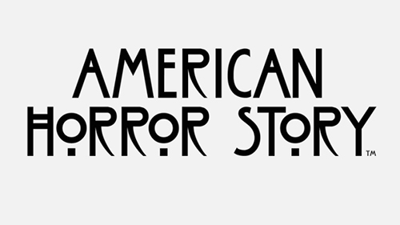
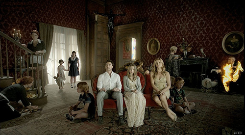
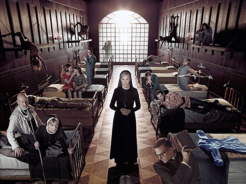
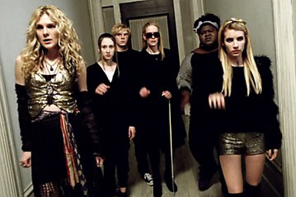
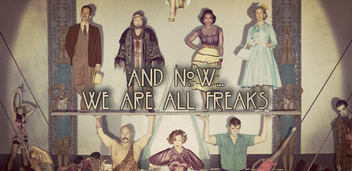

American Horror Story
American Horror Story is een Amerikaanse dramaserie bedacht door Ryan Murphy en Brad Falchuk. Ieder seizoen heeft een volledig op zichzelf staand verhaal met nieuwe personages. Een aantal van de hoofdrolspelers duikt desondanks toch in meerdere seizoenen op, telkens in een andere rol.
American Horror Story: Murder House
American Horror Story: Murder House is het eerste seizoen van de Amerikaanse dramaserie American Horror Story. Het verhaal speelt zich hoofdzakelijk af in en rond een oud, bezeten landhuis.
De familie Harmon verhuist van Boston naar Los Angeles nadat moeder Vivien een bevalling met een doodgeboren kind achter de rug heeft. Ze probeert haar relatie met haar man terug op de sporen te krijgen nadat die een relatie heeft gehad met een van zijn leerlingen terwijl haar dochter Violet te kampen heeft met een depressie. In Los Angeles aangekomen trekken ze in een gerestaureerd herenhuis in, onwetend dat het huis bezeten is.
American Horror Story: Asylum
American Horror Story: Asylum is het tweede seizoen van de Amerikaanse dramaserie American Horror Story. Het verhaal staat volledig los van het voorgaande seizoen en speelt zich hoofdzakelijk af in een psychiatrische instelling in de jaren 1960
De blanke jongeman Kit Walker is in het geheim getrouwd met de donkere Alma, iets dat niet zo gewoon is in 1964. Wanneer Alma verdwijnt, wordt Kit ervan beschuldigd haar en twee andere vrouwen om het leven te hebben gebracht. In afwachting van zijn proces, wordt Kit in een psychiatrische instelling ondergebracht, waar door psychiater Oliver Thredson zal worden nagegaan of hij al dan niet geestesziek is. Kit houdt zijn onschuld staande en wordt hierin gesteund door medepatiënte Grace Bertrand, die eveneens wordt verdacht van gruweldaden.
Al snel blijken er vreemde dingen aan de hand in de door bisschop Timothy Howard opgerichte instelling. Zo houdt dokter Arthur Arden er duistere activiteiten op na en ontstaat er een letterlijk duivelse strijd tussen zusters Jude. Wanneer journaliste Lana Winters achter de mistoestanden komt, wordt ze ten onrechte van haar vrijheid beroofd. Ze is vastberaden te ontsnappen en alles aan het licht te brengen, maar dit blijkt gemakkelijker gezegd dan gedaan.
American Horror Story: Coven
American Horror Story: Coven is het derde seizoen van de Amerikaanse dramaserie American Horror Story. Het verhaal staat volledig los van het voorgaande seizoen en speelt zich hoofdzakelijk af in en rond een heksengenootschap.
De zeventienjarige Zoe Benson komt door een genetische afwijking terecht in een genootschap voor hekserij, waar ze samen met drie vrouwelijke leeftijdsgenoten verblijft. De toenemende krachten van de meisjes worden stilaan een doorn in het oog van de huidige leidster Fiona Goode, die er alles aan tracht te doen om haar verval en opvolging uit te stellen. In navolging van de beruchte seriemoordenaar Madame LaLaurie wil ze het eeuwige leven verkrijgen, maar dat blijkt gemakkelijker gezegd dan gedaan. De verantwoordelijke zwarte voodoopriesteres Marie Laveau heeft het immers alles behalve begrepen op de blanke heksen.
American Horror Story: Freak Show
American Horror Story: Freak Show is het vierde seizoen van de Amerikaanse dramaserie American Horror Story. Het verhaal staat volledig los van het voorgaande seizoen en speelt zich hoofdzakelijk af in en rond een circusgemeenschap.
Het verhaal speelt zich af in 1952 in Florida, waar de Duitse expat Elsa Mars een van Amerika's laatste freakshows tracht overeind te houden. Ze wordt daartoe geholpen door Ethel Darling, een bebaarde vrouw die haar trouw is sinds ze haar van een alcoholverslaving afhielp. Ethels zoon Jimmy Darling is met zijn krabbehanden een van de voornaamste gezichten van het spektakel, al haat hij het om als "freak" te worden aangezien. Hij brengt menig vrouwenharten op hol, zo ook dat van de Siamese tweeling Bette en Dot, die door Elsa als nieuwste attractie wordt geintroduceerd. Ook de krachtpatser Dell Toledo en zijn drieborstige echtgenote Desiree Dupree zijn nieuwkomers die het gezelschap vervoegen.
Een reeks gruwelijke moorden in de omgeving maakt dat de publieke opinie des te sceptischer wordt ten opzichte van de freakshow. De politie gaat er immers vanuit dat het gezelschap hierin betrokken is. Intussen gaat de werkelijke dader ongestoord zijn gangen en vindt hij een medestander in rijkeluiszoon Dandy Mott, die zich anders stierlijk verveelt ten huize moeder Gloria. Ook het oplichtersduo Stanley en Maggie lijkt tot moorden bereid. Een museum gespecialiseerd in misvormde wezens biedt hen immers veel geld in ruil voor menselijk tentoonstellingsmateriaal.
